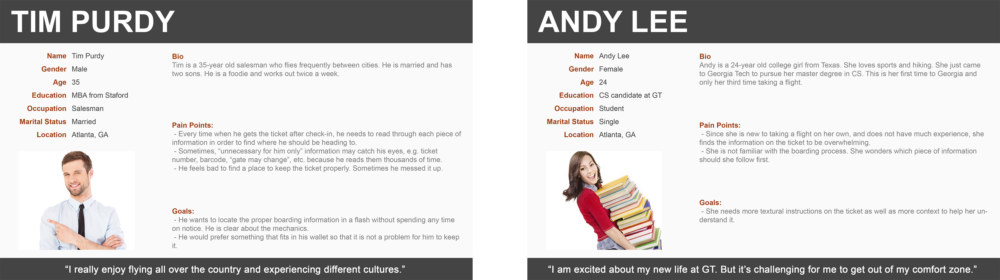
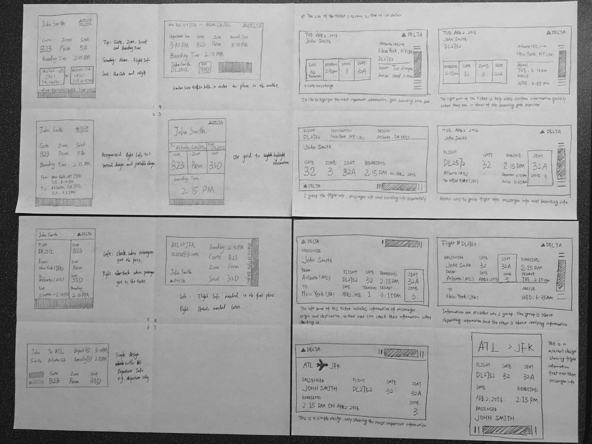
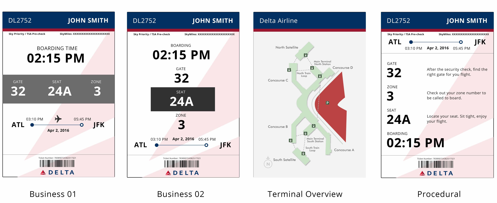
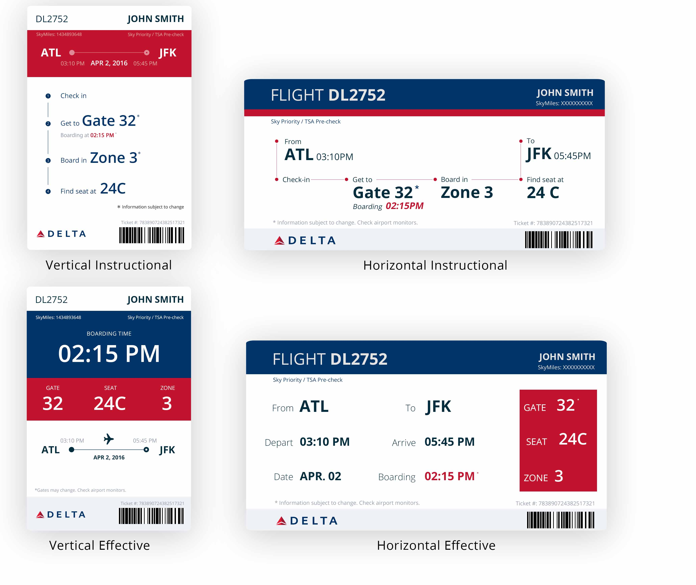

Delta Ticket
Interface Redesign
Delta Ticket Redesign is an in class project aiming to improve the information accessibility and the user experience of Delta airline boarding pass. We, as a team of two, conducted user research, created prototypes and iterated and then finalized our design.
Problem
As digital boarding pass prevails, traveler take advantages of checking-in over their mobile phones. However, there is a still a fair amount of travelers using paper boarding pass as a convention. According to our experience, travelers usually struggle with finding proper information from the current design of Delta ticket. There is always being a bunch of unorganized information on it and people spend lots of time on locating the information needed. In this case, by redesigning the ticket, I am trying to make the information seeking process more enjoyable and accessible for the user.
Understand Users
We started with research on exploring potential users. We did quick question answering at Atlanta airport asking about their identities, expectation from the ticket, and their frequency of flight as well. We interviewed about 30 people at the airport and listed their expectations/needs together. After we came back, we consolidated these expectations into two big groups:
[1] Quick access to the most important information
[2] Directional information and context
According to our interviews, we created two personas. As opposed to selecting one primary persona and sufficing it to other secondary ones, we decided to create two personas.
Understand Tickets
According to the two personas, We decided to start our design process with prioritizing contents. So we collected information on Delta ticket and sent out questionnaires with a scale of 1 - 5 to rate the importance of each piece of information.

Paper Sketches
Based on the voted priorities of information, we considered using different font sizes and positions in order to help important information stands out. We paper sketched 15 low fidelity prototypes which covered both different priorities and procedural considerations.
Round-one Iteration
We brought them to the class and did critiques on them. The biggest problem of our design is that although our goals are clear enough and we are going for it, the design does not reflect them well. We got detailed feedbacks as following:
[1] Large texts do stand out. But smaller ones don’t make much difference.
[2] The procedural affordance is not very clear, only some subjects were able to catch the point.
[3] We are not setting up the eye movement expectation to our users. So it is still unorganized for them.
Mid-fi Prototypes
We considered bringing in solid background color to highlight important information with following top-down and left to right design principles, adding on more textural narratives to help with providing context and making use of the back side of the ticket to include more information.
We ran another round critiques on our design. Here are the feedbacks we got from our interviewees.
[1] The half opaque Delta logo for the background is distracting.
[2] The proportion of dark blue and red should match Delta logo.
[3] Printing contents on the back side requires doubles sides printer, which might not be feasible.
[4] Might be good to use colorful texts to prioritize information.
Final Design
Based on the feedbacks, we rolled out our finalized redesign of Delta tickets.
